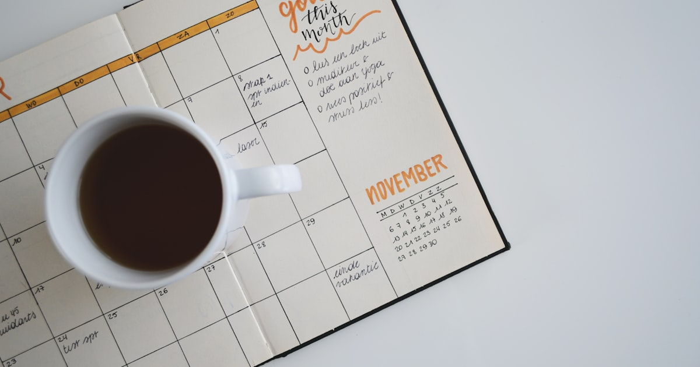

Kenapa Deep Work 4 Jam Lebih Produktif daripada 12 Jam Multitasking
Penelitian menunjukkan 4 jam deep work menghasilkan lebih banyak dibanding 12 jam multitasking. Pelajari ilmu di baliknya dan cara menerapkannya hari ini.

7 Cara Cerdas Mengatur Keuangan Gen Z di Tengah Inflasi 2026
Inflasi 2026 menggerus daya beli Gen Z. Ini 7 strategi finansial cerdas yang sudah diuji untuk bertahan, menabung, dan tetap investasi di tengah harga yang melonjak.

Mengapa 90% Mahasiswa Indonesia Gagal Menabung? Ini 5 Penyebab Utamanya
Riset OJK 2026 mengungkap fakta mengejutkan: 9 dari 10 mahasiswa Indonesia tidak punya tabungan. Inilah 5 penyebab utama dan solusi praktisnya.

Active Recall: 5 Teknik Belajar Cepat Terbukti Ubah Cara Otak Ingat
Active recall adalah teknik belajar paling efektif menurut sains kognitif. Inilah panduan lengkap implementasi, didukung penelitian neuroscience terkini.

Generasi Burnout: Mengapa 73% Gen Z Indonesia Stres Kronis di Usia 25?
Studi terbaru: 73% Gen Z Indonesia mengalami gejala burnout kronis sebelum usia 25. Inilah penyebab dan strategi pemulihan yang didukung sains.

Krisis Kesehatan Mental Mahasiswa Indonesia 2026: Fakta yang Diabaikan
1 dari 4 mahasiswa Indonesia mengalami depresi. Data mengejutkan tentang krisis kesehatan mental di kampus dan mengapa sistem konseling gagal menangani.

Kecanduan Short Video: Bagaimana TikTok Mengubah Otak Generasi Muda
Rata-rata Gen Z scroll 3 jam/hari. Neuroscience di balik kecanduan short video, dampak pada attention span, dan cara melawan dopamine loop.

Mitos 5 AM Club: Apakah Bangun Pagi Benar-benar Bikin Sukses?
Science says: kronotipe menentukan produktivitasmu, bukan jam alarm. Riset terbaru membongkar mitos bangun subuh dan apa yang sebenarnya bekerja.

Gaji Gen Z Indonesia vs Biaya Hidup 2026: Data yang Mengejutkan
UMR rata-rata Rp 5 juta vs biaya hidup Rp 7 juta. Data perbandingan gaji Gen Z di berbagai kota besar Indonesia dan realita biaya hidup yang mencekik.

Bahaya Ultraprocessed Food yang Kamu Konsumsi Setiap Hari
68% makanan yang dikonsumsi anak muda Indonesia adalah ultraprocessed food. Studi terbaru mengungkap dampak mengerikan bagi kesehatan jangka panjang.

Rahasia Orang Jepang Hidup Lebih Lama: Filosofi Ikigai
Okinawa punya 68 centenarian per 100.000 penduduk. Pelajari rahasia panjang umur dan kebahagiaan dari filosofi Ikigai yang bisa kamu terapkan hari ini.

Quiet Quitting 2026: 7 Alasan Gen Z Nekat Tinggalkan Hustle Culture
67% Gen Z Indonesia mengalami burnout. Quiet quitting bukan malas, tapi perlawanan terhadap budaya kerja toxic. Data dan analisis tren ini.

Stoikisme Gen Z: 5 Filosofi Kuno Ampuh Lawan Stres Digital 2026
Pencarian 'stoicism' naik 340% di kalangan Gen Z. Mengapa filosofi Marcus Aurelius kembali relevan di era kecemasan digital?

Metode Feynman: 5 Langkah Cerdas Belajar ala Genius
Teknik belajar Richard Feynman terbukti meningkatkan retensi hingga 90%. Pelajari 4 langkah sederhana yang mengubah cara Anda memahami konsep apapun.

Dopamine Detox: 7 Cara Reset Otak dari Kecanduan Scrolling 2026
Rata-rata pemuda Indonesia scrolling 8 jam/hari. Pelajari sains di balik kecanduan dopamin dan protokol detox 3 level yang terbukti efektif.

Journaling: Senjata Rahasia Orang-Orang Sukses
Journaling bukan sekadar menulis diary. Ini adalah alat refleksi dan perencanaan yang digunakan oleh para pemimpin dunia.

Second Brain: 5 Cara Cerdas Kelola Pengetahuan ala Profesional 2026
Metode Second Brain dari Tiago Forte — framework CODE, perbandingan Notion vs Obsidian, dan panduan implementasi 4 minggu.

7 Teknik Manajemen Waktu Ampuh yang Bikin Hidup 2x Lebih Produktif
Strategi manajemen waktu yang terbukti efektif untuk meningkatkan produktivitas dan keseimbangan hidup.

Growth Mindset: Mengubah Pola Pikir untuk Mencapai Potensi Maksimal
Konsep growth mindset dari Carol Dweck dan bagaimana menerapkannya untuk pertumbuhan pribadi dan profesional.
Kecerdasan Emosional: 5 Bukti EQ Lebih Krusial dari IQ di 2026
Kecerdasan emosional menentukan keberhasilan karir dan hubungan. Pelajari cara meningkatkan EQ untuk hidup yang lebih baik.

Atomic Habits 2026: 7 Cara Bikin Kebiasaan Kecil Mengubah Hidup
Pelajaran dari konsep atomic habits tentang bagaimana perubahan kecil 1% setiap hari dapat menghasilkan transformasi luar biasa.

Digital Detox 2026: 5 Cara Ampuh Rebut Kembali Fokus di Era Distraksi
Ketergantungan digital menggerus produktivitas dan kesehatan mental. Pelajari strategi digital detox yang realistis dan efektif.